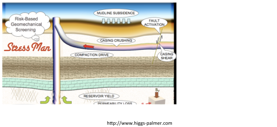
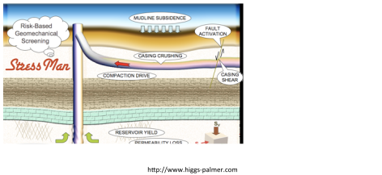

Next: Offshore total vertical stress Up: Rock vertical stress gradient Previous: Rock vertical stress gradient Contents
First, consider an onshore scenario in which the surface coincides with the water table (in most practical applications this is a reasonable assumption).
Assume a constant fluid density  and constant bulk rock mass density
and constant bulk rock mass density
 (remember that it includes fluids within pores).
Then, the pore pressure gradient as a function of depth
(remember that it includes fluids within pores).
Then, the pore pressure gradient as a function of depth  will be
will be
as long as there is a connected pore network path from depth to the top, such that the fluid is in hydrostatic equilibrium (it may not happen sometimes).
The total vertical stress gradient as a function of depth is calculated with equation 2.6 because in onshore conditions the assumption of constant bulk mass density with depth is acceptable.
Both (hydrostatic)  and
and  increase linearly with depth with constant mass densities (Figure 2.3).
increase linearly with depth with constant mass densities (Figure 2.3).
The difference between total stress and pore pressure is called “effective stress”; hence, the effective vertical stress is
We will see later that effective stress is a very important quantity and dictates rock deformation and failure. Figure 2.4 shows an example of effective stress making cohesionless ground coffee strong and stiff like a brick. You will see this example in class how I stand on a “brick” of ground coffee thanks to Terzaghi's effective stress and its strengthening behavior due to friction.
Similar to the membrane effect conceptualized in Figure 2.4, the mudcake that forms around a wellbore during drilling provides an effective stress to the surrounding rock.
This is a result of the sharp pressure gradient between the mud pressure  in the pore pressure in the formation (Figure 2.5).
in the pore pressure in the formation (Figure 2.5).
EXAMPLE 2.2:
Compute the pore pressure and vertical stress at 4000 ft of depth (TVD) underneath an onshore drilling rig.
The pore pressure gradient is hydrostatic with brine mass density of 1.04 g/cm and the average rock bulk density is about 2.35 g/cm.
Make a plot of pressure and vertical stress versus depth.
Show results in MPa and psi.
SOLUTION
The corresponding hydrostatic and lithostatic gradients are
 kg/m kg/m m/s m/s MPa/km MPa/km |
 kg/m m/s kg/m m/s MPa/km MPa/km |
 MPa/km MPa/km km km MPa MPa psi psi |
 MPa/km km MPa MPa/km km MPa psi psi |


![\includegraphics[scale=0.55]{.././Figures/split/2-20.pdf}](img67.svg)